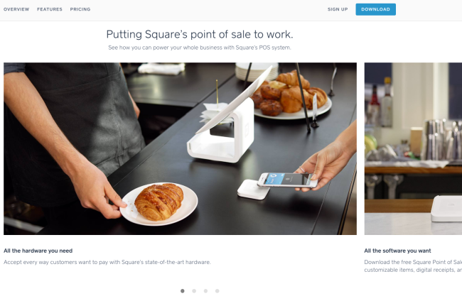
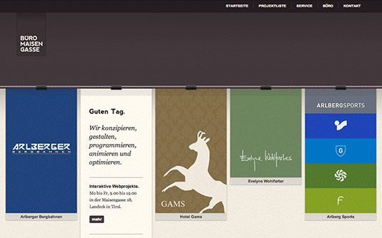
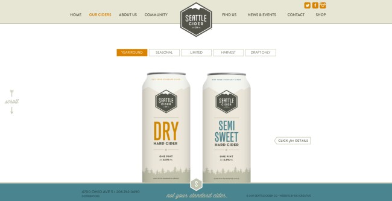
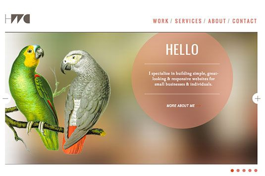
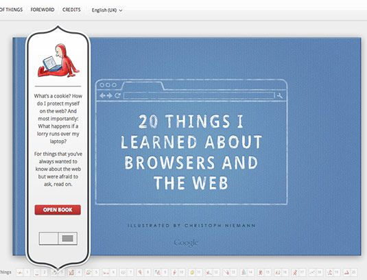

These expert tips show you when and how to use content sliders in your website designs.
Content sliders, aka carousels, are ubiquitous in contemporary web design, and for good reason. They are simple to set up, totally customisable to the look and feel of your site, and allow you to showcase creative content in a relatively small footprint.
Designers love them because of their flexibility – making it easy to tell a compelling story – and website owners love them because they can promote multiple elements of their business in a simple site element. Done right, sliders look good and bring a visual punch to any site.
Sliders are easy to add to most websites and there are plenty of options out there, particularly for WordPress users. But a slider isn't always the answer, and for every gorgeous slider there are hundreds of eyesores, or worse, unusable sliders. So when is the right time to use one? We’ve put together a list of the seven best times to use a content slider.
Sliders are made for product tours. When presented all at once, large quantities of information can overwhelm visitors; they're less likely to get distracted if it’s broken down into more manageable pieces. Consider using a slider when information needs to be presented sequentially, like in these product tours.
Consider these two examples. Square (above) is a device used by companies to accept credit cards through smartphones and other devices. Its site uses sliders throughout to explain the variety of ways to use the service and highlight the individual features and benefits.
Sliders are the ideal vehicle for sites that are regularly updated. If you access your news online each morning, you probably encounter content sliders on a daily basis; in fact, this is one of their most common implementations.
Take a cue from the homepages of popular news and television networks, such as The Discovery Channel (above) and Hulu (below). Media sites such as these often rely on sliders to showcase an ever-changing lineup of new and popular articles and videos. They're great for when you want to deliver lots of content – especially video content – that changes frequently.
Photo galleries shine in sliders. Sometimes a great image (or several) is all that's required to communicate everything you need to say about your brand. Whether it's a handful of full-page high-resolution images or several smaller ones, when you need to display a photo gallery, a slider is a great way to do so.
To highlight both the natural beauty of its location and the diversity of its students, Regent College (above) uses an automatic horizontal slider with unique design elements as an appealing homepage element.
Because they're suited to showcasing visual content, sliders have become the standard in online portfolios for artists of all kinds, from photographers to graphic designers to web developers. In very little space, sliders allow you to creatively display almost any type of work to potential clients.
Büro Maisengasse (above) uses one of the most fun sliders yet. Use the arrows to navigate horizontally and projects zoom past as if being tugged along a clothes line.
Sliders are an excellent choice for showcasing products in ecommerce. Whether you want to display the full range of products, showcase a select few to communicate your aesthetic, or highlight the newest additions to the line, examples of sliders used in ecommerce are plentiful.
Cider brewer The Seattle Cider Company’s homepage slider uses a minimalist navigation to showcase a curated selection of products, successfully communicating its crafted aesthetic.
Sliders aren’t limited to visual content. They are also handy when you need to display a series of related snippets of texts or communicate some written information about your site.
Desk.com makes a big deal out of their testimonials on its homepage, giving each rave review its own slide in the slideshow.
What sliders are really great at is telling a story. Google uses a slider for their promotional book for Chrome. Some transitions have a whimsical page-turning effect that’s perfect for this medium.
